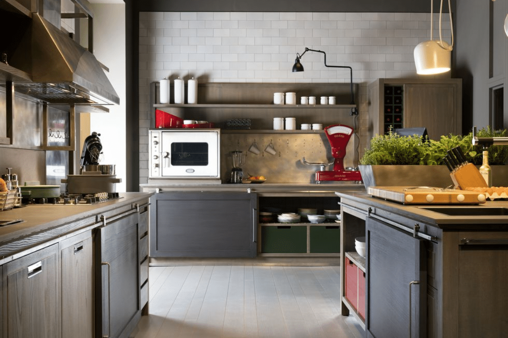

Barcelona se Prepara para un Emocionante Concurso de Cocina: Gastronomía en su Máxima Expresión
Texto introductorio del artículo.
En las brillantes calles de Barcelona, se avecina un emocionante evento culinario que capturará la atención de los amantes de la gastronomía. Bajo el nombre "Cocina de Vanguardia: Innovación en Cada Bocado", este concurso, organizado por la Asociación Gastronómica de Barcelona, reunirá a chefs talentosos en un desafío que celebra la creatividad y el dominio culinario.
"Este concurso es una plataforma para destacar la fusión entre tradición y modernidad en la cocina, desafiando a los participantes a crear platos únicos que impresionen tanto visual como gustativamente", comenta María López, presidenta de la asociación.
Los concursantes competirán en rondas eliminatorias donde deberán demostrar su destreza utilizando técnicas innovadoras y ingredientes locales. Desde reinterpretaciones de platos clásicos hasta creaciones totalmente revolucionarias, se espera que el concurso sea una exhibición de talento y creatividad gastronómica.
- Ronda 1
- Ronda 2
- Ronda 3
Durante el evento, habrá degustaciones abiertas al público donde los espectadores podrán disfrutar de las creaciones culinarias de los concursantes y descubrir nuevos sabores que destacan la diversidad culinaria de la región. Además del reconocimiento, los ganadores tendrán la oportunidad de colaborar con chefs locales reconocidos y participar en eventos exclusivos.

Marca tus calendarios y prepárate para unirse a esta emocionante experiencia gastronómica en Barcelona. Desde platos audaces hasta técnicas innovadoras, este concurso promete ser una celebración de la cocina de vanguardia donde el pasado y el futuro se unen en cada bocado.